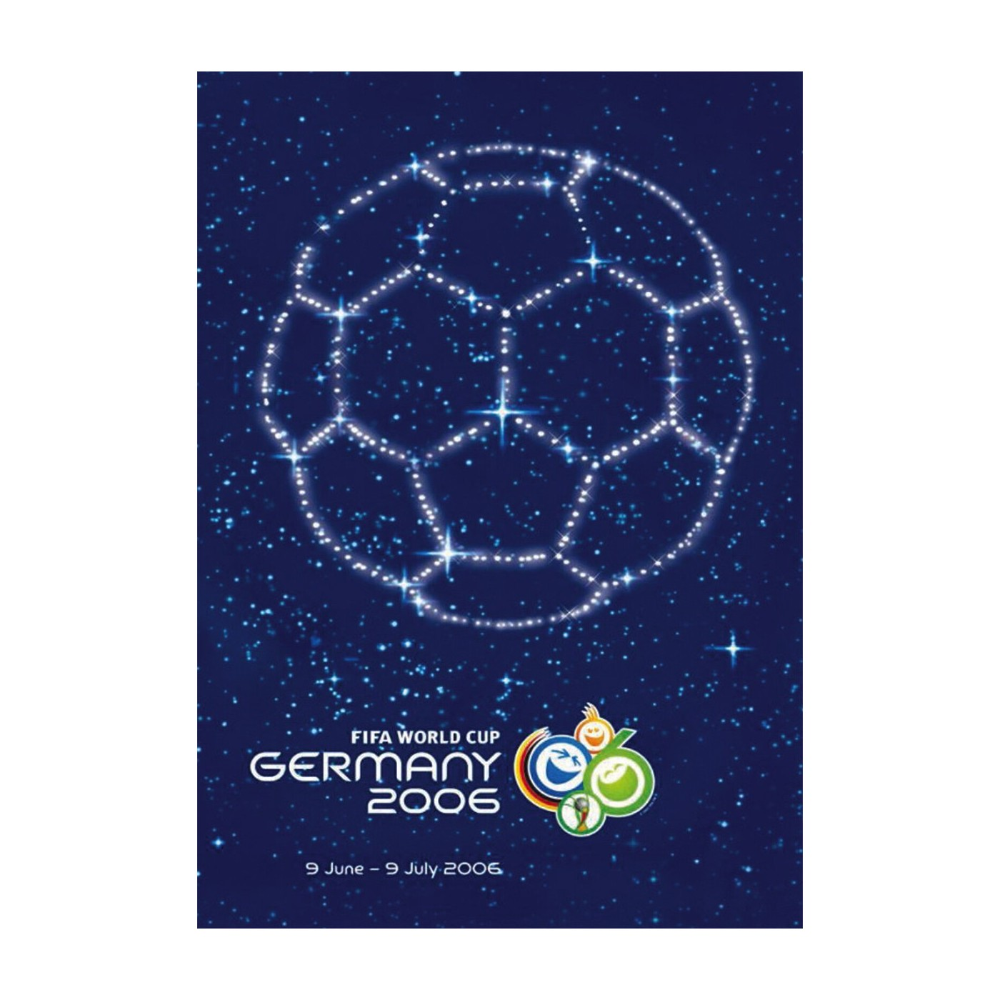
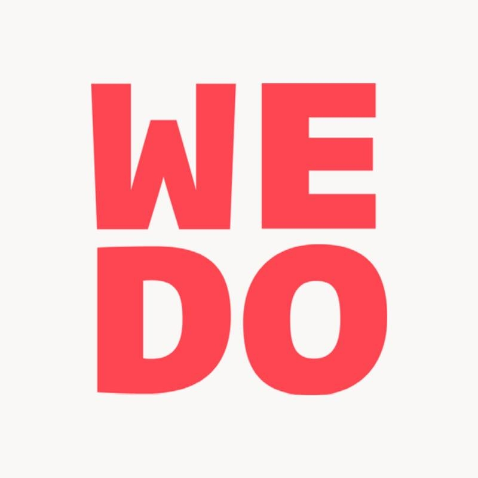

Official Poster
The official 2006 FIFA World Cup poster was designed by the Berlin-based agency WE DO Communication.
The poster features a starry sky where the stars form the shape of a football against a night sky background. This design was intended to represent "wishing and dreaming" and the emotional connection of fans to the sport.
It was chosen through a public poll in Germany, beating four other shortlisted designs. Approximately 50,000 phone calls and text messages were received during the five-day voting period.
The design was officially unveiled in Stuttgart by Franz Beckenbauer, the president of the 2006 FIFA World Cup Organizing Committee.

WE DO Communication
WE DO communication GmbH is a Berlin-based creative agency primarily known for its work in sustainability and social impact communications. Founded in 2002, the agency gained international recognition for designing the official 2006 FIFA World Cup poster.
The agency is led by Managing Partners Gregor Blach and Ina von Holly.
Since its founding, WE DO has pivoted toward "sustainable communication with content and attitude". They specialize in campaigns for ministries, NGOs, and institutions, often focusing on social responsibility and environmental issues like the energy transition.
While headquartered in Berlin-Mitte, they also maintain a presence in Hamburg.
Their offerings include strategy, brand identity, digital marketing, and event organization.